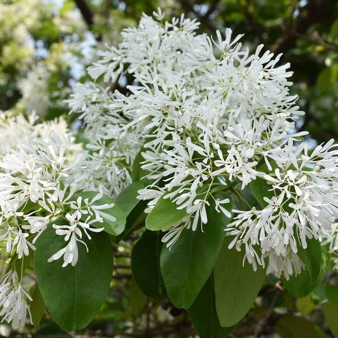

-
流蘇花
學名：Chionanthus retusus
-
校園分布：
體育館停車場、社科院二館2樓
-
開花月份：
3月 - 4月(Mar - Apr)
植物簡介
又稱流疏樹、茶葉樹、四月雪，是木樨科流蘇樹屬的植物，分佈於中國大陸、台灣、韓國、日本。花白色，是良好的庭園觀賞植物。木材堅重細緻，質地優良，多用以製作算盤或器具等；嫩葉可當茶葉作飲料，果實含油豐富，可榨油，供工業用。
落葉灌木或小喬木，株高可達6公尺以上，幼枝有毛。春末開花，聚繖花序，頂生，花冠白色，花瓣4裂。夏至秋季結果，核果橢圓形，熟果黑色。葉對生，卵形或橢圓形。疏葉樹木。
參考資料：https://zh.wikipedia.org/zh-tw/流蘇樹
圖片來源（一）：https://news.ltn.com.tw/news/life/breakingnews/3873789
